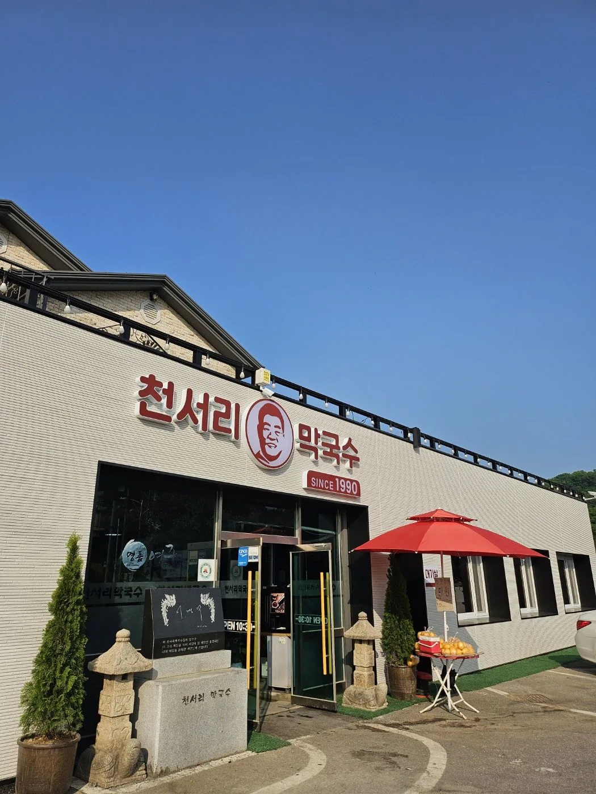
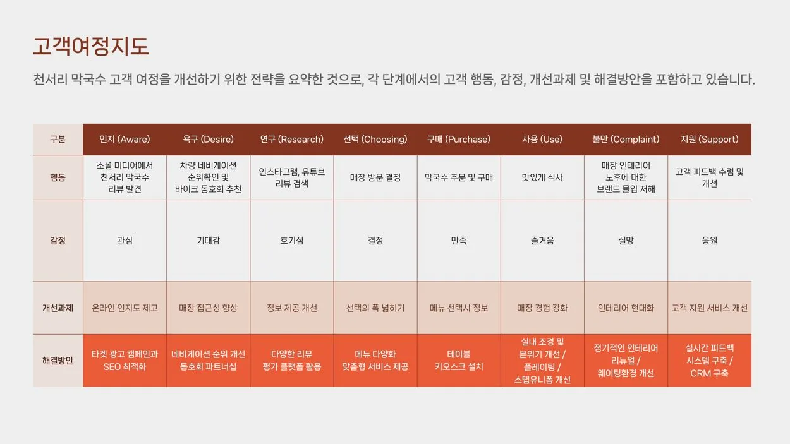
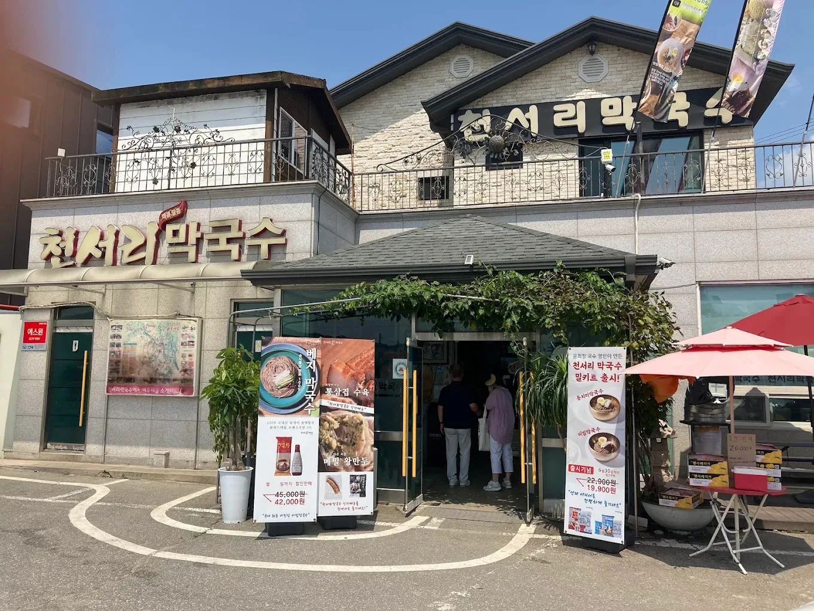
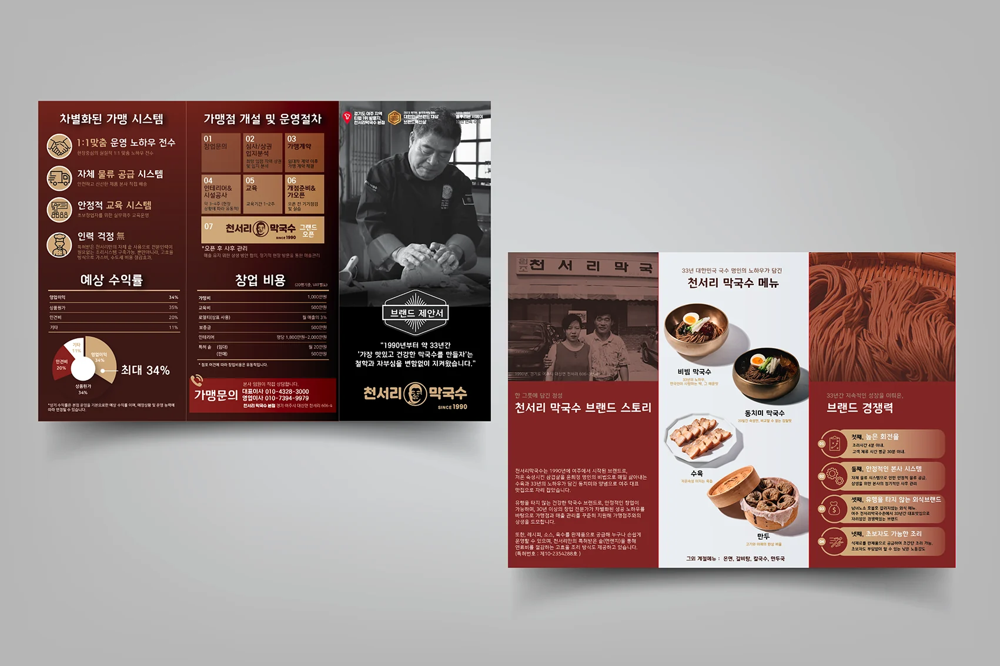
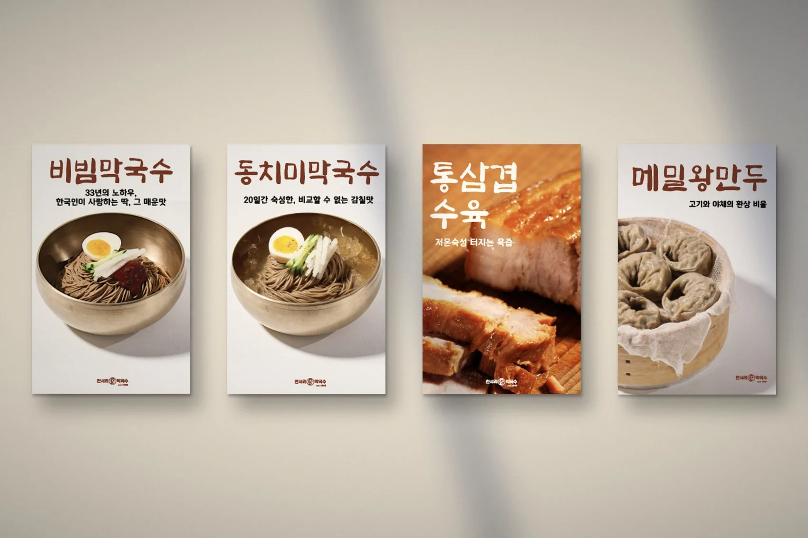
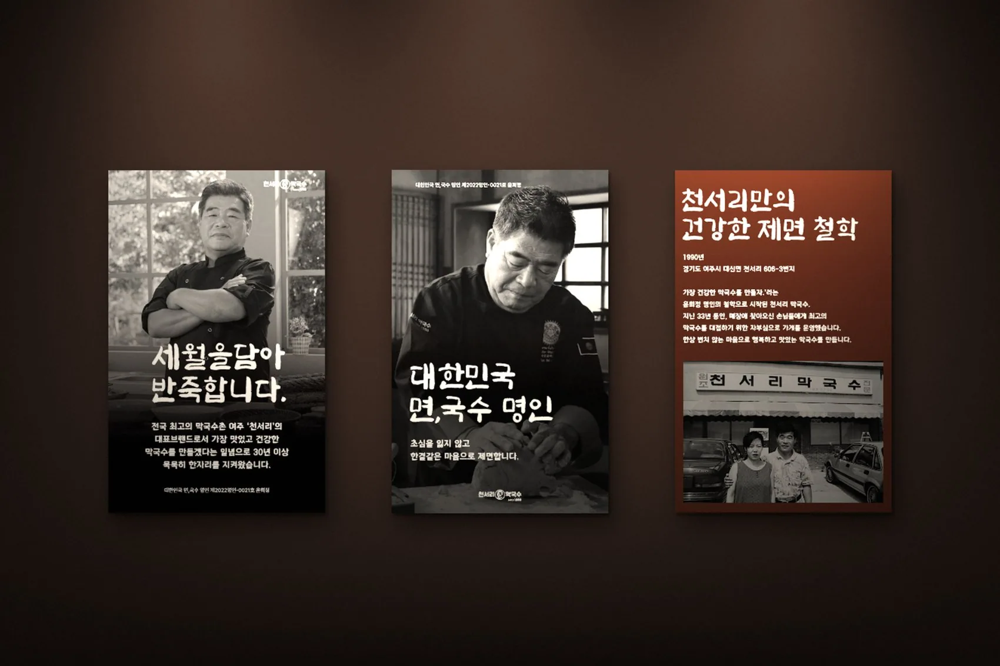
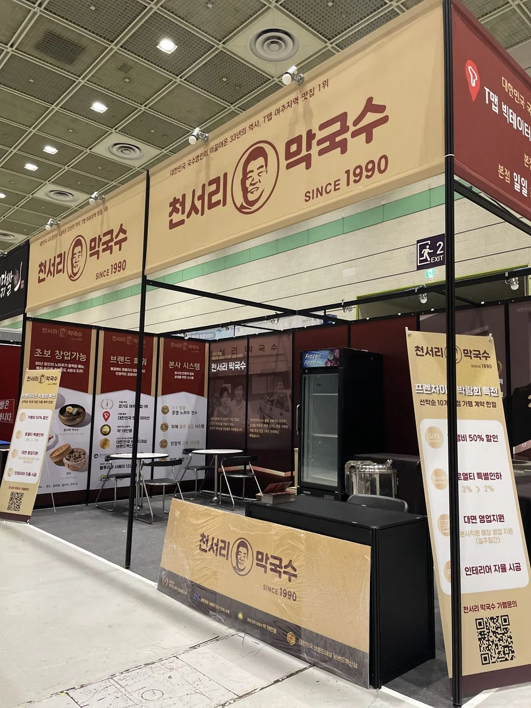

Clarify.
Compared the founder's craftsmanship-led narrative with visitor needs, existing behaviour and the emotional value of hospitality.

A heritage makguksu brand had built its story on taste and craftsmanship. HALO helped it see the human value its customers came to trust.

Compared the founder's craftsmanship-led narrative with visitor needs, existing behaviour and the emotional value of hospitality.
Developed the “Cheonseori Family” (식구) direction and linked sincerity and care to the restaurant's customer touchpoints.
Connected experience improvements with outward-facing brand activities, including a 2024 exhibition.
A restaurant earns loyalty not only through what it serves, but through how it makes people feel.
Drawn from observable conduct: the founder's community involvement, generosity and personal greetings. A qualitative strategic finding, not a measured claim.
Great food was the story, but not the whole value. The question was what made visitors feel confident choosing Cheonseori, and welcomed once they arrived.
Three visual lenses connect the founder’s behaviour, the original brand values and the customer journey.
Craft · recipe refinement · expertise
Community service · generous greetings · open hospitality
Trust · warmth · belonging
Store identity and signage
Waiting-space integration
Table ordering
Staff presentation and guest care
Exhibition presence






Brand strategy, customer-experience direction and exhibition communication. Photographs document visible touchpoints and strategy pages document frameworks; no sales, loyalty or conversion results are claimed.